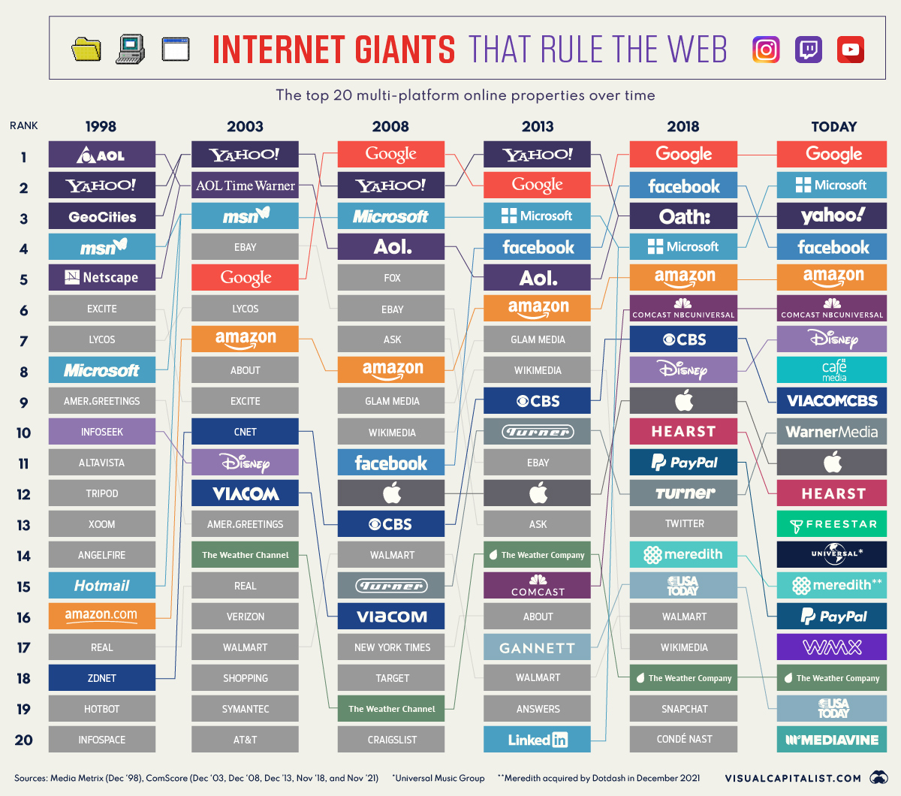
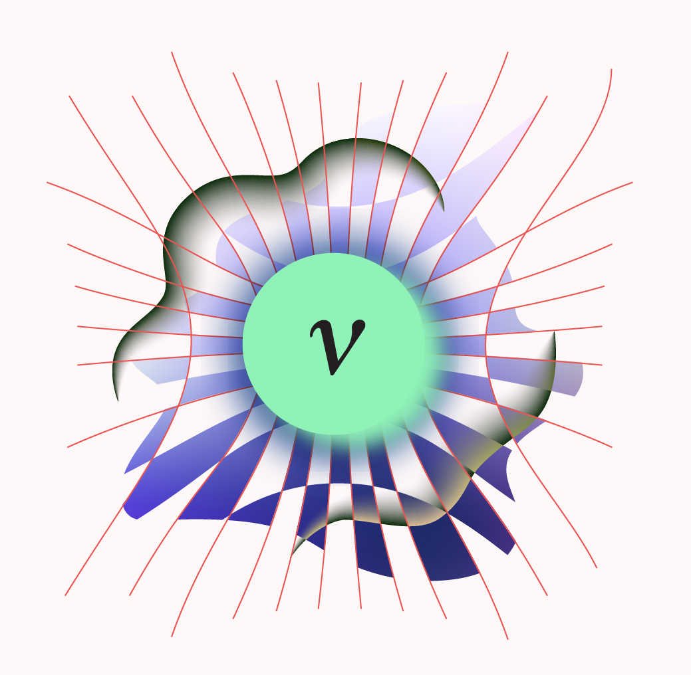

This week, I selected 5 articles which I think is very interesting. The first article visualizes the Top 20 internet companies from Year-1998 to now. The second article shows the path to rich from an Indian crypto-king Mr. Vignesh Sundaresan. The third article . The fourth article presents the new concept office introduced by Amazon in 2018 in Seattle, named as “The Sphere”. The last one lists the five crucial questions that we cannot answer by Standard Model in particle physics.
From late 1990s to now, the list of Top 20 companies which dominate the internet has changed dramatically. It reflects the trends of the internet industry.
The visualization below used the data primarily from ComScore’s U.S. Multi-Platform Properties ranking. You can read the article here..

Vignesh Sundaresan, aka MetaKovan, has amassed a digital art collection worth tens of millions of dollars. At a sale by Christie’s, he bid $69 million to win Beeple piece - “Everydays: The First 5000 Days.”
He told the Financial Times the $69 million acquisition was “much less” than 10% of his net worth, which he said was almost entirely in crypto. He represents a group of nouveau-riche people who accumulates the wealth from cryptocurrency investments.
Here is the Full article..
A tagged Bar-tailed Godwit, #4BBRW, landed in Australia in October 2021, after flying 239 hours nonstop from Alaska and breaking a flight record. The first map image below displays the travelling routes by this Godwit. The second image is the #4BBRW.
The full article is here.
### 4. AMAZON office in Seattle: ” The Spheres ” In January 2018, Amazon officially launch their hybrid greenhouse office “The Spheres: The plants, the architecture, and a transforming city”.
Click it to view the news.
As per Don Lincoln, a physicist at the US Department of Energy’s Fermi National Accelerator Laboratory, “The Standard Model is scientists’ best guess at explaining the universe.”
Since the scientists formulated Standard Model in 1970s, it has predicted the outcome of countless experiments in particle physics with remarkable accuracy. Having said that, it still fails to answer the 5 mysteries. Click it to view the details.
